Data Exploration
library(data.table, warn.conflicts = FALSE)
library(igraph, warn.conflicts = FALSE)
library(ggplot2, warn.conflicts = FALSE)Whole data set
total_info <- read.delim("data/raw/arg_all/arg_datasets.tsv", sep = "\t", header = TRUE, fill = TRUE )
total_info$mean_seq_length <- as.numeric(as.character(total_info$mean_seq_length))## Warning: NAs introduced by coercionhead(total_info)## id project
## 1 4447970 The oral metagenome in health and disease
## 2 4447971 The oral metagenome in health and disease
## 3 4440275 cDNA - Plymouth Marine Lab Coastal Waters project
## 4 4440276 cDNA - Plymouth Marine Lab Coastal Waters project
## 5 4440279 Northern Line Islands
## 6 4440280 Northern Line Islands
## name bps sequences biome
## 1 CA_05_4.6 27669924 70503 human-associated habitat
## 2 CA_06_1.6 37519874 97722 human-associated habitat
## 3 1-19-DNA-flx 59316369 344216 marine habitat
## 4 6-19-DNA-flx 68187679 304020 marine habitat
## 5 FannLIMic20050811 30909241 290844 marine habitat
## 6 FannLIVir20050811 39607682 380355 marine habitat
## feature material environment
## 1 human-associated habitat human-associated habitat human-oral
## 2 human-associated habitat human-associated habitat human-oral
## 3 marine habitat marine habitat water
## 4 marine habitat marine habitat water
## 5 marine habitat marine habitat water
## 6 marine habitat marine habitat water
## sequencing_type location
## 1 WGS Valencia
## 2 WGS Valencia
## 3 WGS coastal waters of a fjord close to Bergen, Norway
## 4 WGS coastal waters of a fjord close to Bergen, Norway
## 5 WGS Fanning (Tabuaeran) Atoll
## 6 WGS Fanning (Tabuaeran) Atoll
## mean_seq_length X select
## 1 392.464 public
## 2 383.945 public
## 3 172.323 public
## 4 224.287 public
## 5 106.274 public
## 6 104.133 publicbiome_info_2 <- table(unlist(total_info$biome))
ggplot(as.data.frame(biome_info_2[biome_info_2 > 100]), aes(x = reorder(Var1, Freq), y = Freq)) + geom_bar(stat = "identity") +
labs(x = element_blank(), y = element_blank(), title = "Biome counts: All datasets (n = 7848)") +
theme(plot.title = element_text(hjust = 0.5), plot.subtitle = element_text(hjust = 0.5),
axis.text.x = element_text(angle = 90, hjust = 1))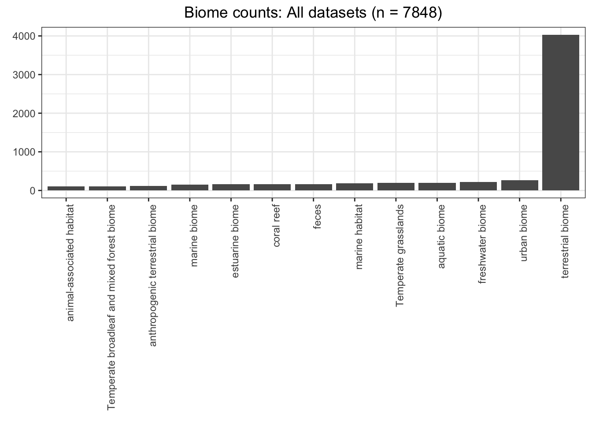
env_info_2 <- table(unlist(total_info$environment))
ggplot(as.data.frame(env_info_2[env_info_2 > 50]), aes(x = reorder(Var1, Freq), y = Freq)) + geom_bar(stat = "identity") +
labs(x = element_blank(), y = element_blank(), title = "Environment counts: All datasets (n = 7848)") +
theme(plot.title = element_text(hjust = 0.5), plot.subtitle = element_text(hjust = 0.5),
axis.text.x = element_text(angle = 90, hjust = 1))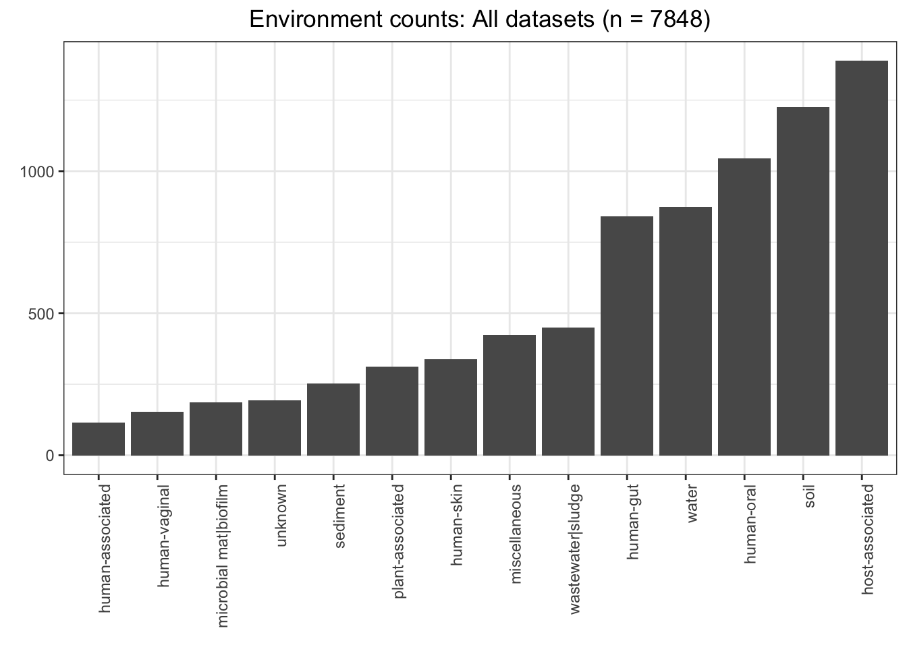
Reads Info
Subset
arg_subset_info <- read.delim("data/raw/arg_subsets/arg_datasets.subset.tsv", sep = "\t", header = TRUE)
arg_subset_info$mean_seq_length <- as.numeric(as.character(arg_subset_info$mean_seq_length))## Warning: NAs introduced by coercionhead(arg_subset_info)## id project
## 1 4440026 Human Lung Healthy vs Cystic Fibrosis Metagenome
## 2 4440036 Northern Line Islands
## 3 4440037 Northern Line Islands
## 4 4440038 Northern Line Islands
## 5 4440039 Northern Line Islands
## 6 4440040 Northern Line Islands
## name bps sequences
## 1 CFLungPat001Rep1SDVir20060505 4090704 50909
## 2 KingLIVir20050821 10283401 94915
## 3 KingLIMic20050821 19753735 188445
## 4 XmasLIVir20050805 31332362 283390
## 5 PalmLIMic20050818 37055255 351205
## 6 PalmLIVir20050818 37461045 358983
## biome feature
## 1 animal-associated habitat animal-associated habitat
## 2 marine habitat marine habitat
## 3 marine habitat marine habitat
## 4 marine habitat marine habitat
## 5 marine habitat marine habitat
## 6 marine habitat marine habitat
## material environment sequencing_type
## 1 animal-associated habitat human-associated WGS
## 2 marine habitat water WGS
## 3 marine habitat water WGS
## 4 marine habitat water WGS
## 5 marine habitat water WGS
## 6 marine habitat water WGS
## location
## 1 Adult cystic fibrosis Clinic at the University of California San Diego Medical Center
## 2 Kingman Atoll
## 3 Kingman Atoll
## 4 Christmas (Kiritimati) Atoll
## 5 Palmyra Atoll
## 6 Palmyra Atoll
## mean_seq_length X select arg_percent
## 1 80.353 public 7.857157e-05
## 2 108.343 public 0.000000e+00
## 3 104.825 public 0.000000e+00
## 4 110.563 public 0.000000e+00
## 5 105.509 public 2.847340e-06
## 6 104.353 public 2.228518e-05proportion = 0.1
cutoff = quantile((sort(arg_subset_info$arg_percent)), 1 - proportion)ggplot(data.frame(val = arg_subset_info$arg_percent), aes(val)) + geom_histogram(binwidth = 0.001) +
labs(x = "ARG Percentage", y = "Count", title = "ARG proportion counts (n = 934)") +
theme(plot.title = element_text(hjust = 0.5)) +
geom_vline(xintercept = 4.545e-04, colour = "#a9f9cd", linetype = "dashed") +
geom_vline(xintercept = cutoff, colour = "#BB0000", linetype = "dashed") ## Warning: Removed 2 rows containing non-finite values (stat_bin).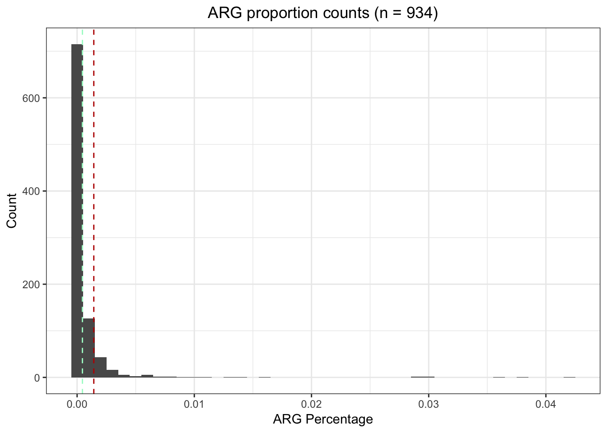 We’ll now use these cutoffs to separate the subset data into three clusters - low, medium, and high:
low.arg_subset_info <- arg_subset_info[arg_subset_info$arg_percent < 4.545e-04, ]
med.arg_subset_info <- arg_subset_info[arg_subset_info$arg_percent >= 4.545e-04 & arg_subset_info$arg_percent <= cutoff,]
high.arg_subset_info <- arg_subset_info[arg_subset_info$arg_percent > cutoff, ]
head(med.arg_subset_info)## id project name
## 11 4440054 Mosquito Metagenome Mosq2SDVir2060606
## 25 4440144 Chula Vista, CA Solar Saltern Study HighSalternSDbayVir20051128
## 39 4440283 Chicken Cecum Microbiome Chicken Cecum A
## 40 4440284 Chicken Cecum Microbiome Chicken_Cecum_B
## 41 4440285 Chicken Cecum Microbiome Chicken Cecum A Contigs
## 42 4440286 Chicken Cecum Microbiome Chicken Cecum B Contigs
## bps sequences biome feature
## 11 84803776 810891 animal-associated habitat animal-associated habitat
## 25 465209 4645 marine biome saline evaporation pond
## 39 32296796 310801 animal-associated habitat animal-associated habitat
## 40 26378422 254712 animal-associated habitat animal-associated habitat
## 41 3382776 27476 animal-associated habitat animal-associated habitat
## 42 2487532 22821 animal-associated habitat animal-associated habitat
## material environment sequencing_type
## 11 animal-associated habitat unknown WGS
## 25 saline water water WGS
## 39 animal-associated habitat host-associated WGS
## 40 animal-associated habitat host-associated WGS
## 41 animal-associated habitat host-associated WGS
## 42 animal-associated habitat host-associated WGS
## location mean_seq_length X select arg_percent
## 11 unknown 104.581 public 0.0007818560
## 25 Chula Vista, CA 100.153 public 0.0006458558
## 39 Urbana, IL 103.915 public 0.0007046309
## 40 Urbana, IL 103.562 public 0.0006517164
## 41 Urbana, IL 123.117 public 0.0012010482
## 42 Urbana, IL 109.002 public 0.0009640244low.mean_seqs <- data.frame(treatment = "Low", value = low.arg_subset_info$mean_seq_length)
med.mean_seqs <- data.frame(treatment = "Med", value = med.arg_subset_info$mean_seq_length)
high.mean_seqs <- data.frame(treatment = "High", value = high.arg_subset_info$mean_seq_length)
all.mean_seqs <- rbind(low.mean_seqs, med.mean_seqs, high.mean_seqs)
means <- aggregate(value ~ treatment, all.mean_seqs, mean)
ggplot(all.mean_seqs, aes(x = treatment, y = value, fill = treatment)) + geom_boxplot(show.legend = FALSE) +
labs(x = "ARG Prevalance", y = "Mean Sequence Length", title = "Mean Sequence Length by ARG Prevalance class") +
geom_text(data = means, aes(label = value, y = value + 100))## Warning: Removed 6 rows containing non-finite values (stat_boxplot).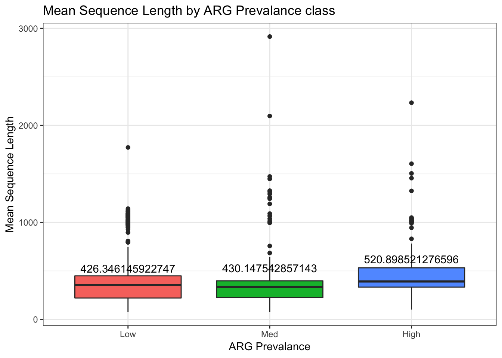
anova.mean_seqs <- aov(value ~ treatment, data = all.mean_seqs)
summary(anova.mean_seqs)## Df Sum Sq Mean Sq F value Pr(>F)
## treatment 2 747286 373643 3.327 0.0363 *
## Residuals 930 104438528 112299
## ---
## Signif. codes: 0 '***' 0.001 '**' 0.01 '*' 0.05 '.' 0.1 ' ' 1
## 6 observations deleted due to missingnessTukeyHSD(anova.mean_seqs)## Tukey multiple comparisons of means
## 95% family-wise confidence level
##
## Fit: aov(formula = value ~ treatment, data = all.mean_seqs)
##
## $treatment
## diff lwr upr p adj
## Med-Low 3.801397 -69.038037 76.64083 0.9917596
## High-Low 94.552375 8.130782 180.97397 0.0279659
## High-Med 90.750978 -14.147255 195.64921 0.1054264Cooccurrence Data
arg_cooccurrence.tsv contains the cooccurrence data (ie, Spearman’ correlation) for all the ARGs found in arg_datasets.subset.tsv.
arg_cooccurrence_table <- read.table("data/raw/cooccurrences/arg_cooccurrence.tsv",
col.names = c("ARG_1", "ARG_2", "rho", "p"))
head(arg_cooccurrence_table)## ARG_1
## 1 gb.DQ212986.+.2258-2966.ARO:3002926.vanRG
## 2 gb.DQ212986.+.2258-2966.ARO:3002926.vanRG
## 3 gb.DQ212986.+.2258-2966.ARO:3002926.vanRG
## 4 gb.DQ212986.+.2258-2966.ARO:3002926.vanRG
## 5 gb.DQ212986.+.2258-2966.ARO:3002926.vanRG
## 6 gb.DQ212986.+.2258-2966.ARO:3002926.vanRG
## ARG_2 rho p
## 1 gb.EU999036.+.688-1390.ARO:3002934.vanSD 0.2387160 1.48040e-13
## 2 gb.KU302801.+.102199-102430.ARO:3002831.vgaC 0.1696780 1.85089e-07
## 3 gb.L36601.+.1420-3130.ARO:3003036.oleB 0.1151190 4.26178e-04
## 4 gb.NC_009632.+.49744-50476.ARO:3000347.ErmA 0.0900387 5.92078e-03
## 5 gb.NC_000913.3.+.3219493-3220873.ARO:3000024.patA 0.1387860 2.09839e-05
## 6 gb.AP009048.1.-.4303042-4304509.ARO:3003550.mdtP 0.1432250 1.12507e-05Since all the cooccurrence values we have here are significant - that is, with \(p < 0.05\) - we will remove the \(p\) value column from arg-cooccurrence_table:
arg_cooccurrence_table <- arg_cooccurrence_table[, -4]
head(arg_cooccurrence_table)## ARG_1
## 1 gb.DQ212986.+.2258-2966.ARO:3002926.vanRG
## 2 gb.DQ212986.+.2258-2966.ARO:3002926.vanRG
## 3 gb.DQ212986.+.2258-2966.ARO:3002926.vanRG
## 4 gb.DQ212986.+.2258-2966.ARO:3002926.vanRG
## 5 gb.DQ212986.+.2258-2966.ARO:3002926.vanRG
## 6 gb.DQ212986.+.2258-2966.ARO:3002926.vanRG
## ARG_2 rho
## 1 gb.EU999036.+.688-1390.ARO:3002934.vanSD 0.2387160
## 2 gb.KU302801.+.102199-102430.ARO:3002831.vgaC 0.1696780
## 3 gb.L36601.+.1420-3130.ARO:3003036.oleB 0.1151190
## 4 gb.NC_009632.+.49744-50476.ARO:3000347.ErmA 0.0900387
## 5 gb.NC_000913.3.+.3219493-3220873.ARO:3000024.patA 0.1387860
## 6 gb.AP009048.1.-.4303042-4304509.ARO:3003550.mdtP 0.1432250Graph Analysis
We begin our network analysis of the ARG cooccurrence by separating arg_cooccurrence_table by positive and negative values and then:
- Finding the optimal community structure of each observed network
- Generating mock community structure of each network and recording the modularity of each mock community structure, as well as which ARGs are the most central
- Comparing the modularity of the observed network against the distribution of the mock communities to determine statistical significance
positive_arg_cooccurrence <- arg_cooccurrence_table[arg_cooccurrence_table[['rho']] > 0, ]
gr_pos_cooccurrence <- graph.data.frame(positive_arg_cooccurrence, directed = FALSE)
negative_arg_cooccurrence <- arg_cooccurrence_table[arg_cooccurrence_table[['rho']] < 0, ]
gr_neg_cooccurrence <- graph.data.frame(positive_arg_cooccurrence, directed = FALSE)We’ll now
plot(gr_pos_cooccurrence, vertex.size = 3, vertex.label = NA)
Finding communities. Beginning with greedy optimization to get big picture.
show_community_info <- function(graph_object){
communities_object <- cluster_fast_greedy(graph_object, weights = E(graph_object)$rho)
hot_otus <- vector
for (community in communities(communities_object)){
sub_graph <- induced.subgraph(graph = graph_object,
v = community, impl = "auto")
highest_degree_otu <- V(sub_graph)[which.max(degree(sub_graph))]$name
hot_otus <- c(hot_otus, highest_degree_otu)
print(paste("Highest degree OTU was", highest_degree_otu, "(degree =",
degree(sub_graph, highest_degree_otu), "):"))
}
plot(communities_object, graph_object,
layout = layout.lgl,
rescaled = TRUE,
vertex.size = ifelse(V(graph_object) %in% hot_otus, 5, 1),
vertex.label = ifelse(V(graph_object) %in% hot_otus, V(graph_object)$id, NA),
vertex.label.cex = 2
)
modularity(graph_object, membership(communities_object))
}Low ARG percentage
low.arg_subset_info <- read.table("data/raw/arg_subsets/arg_datasets.subset.low.tsv", sep = "\t", header = TRUE)
ggplot(data.frame(low.arg_subset_info), aes(biome)) + geom_bar() +
labs(x = element_blank(), y = element_blank(), title = "Biome counts: Low ARG Prevalence (n = 700)") +
theme(plot.title = element_text(hjust = 0.5), plot.subtitle = element_text(hjust = 0.5),
axis.text.x = element_text(angle = 45, hjust = 1))
ggplot(data.frame(low.arg_subset_info), aes(environment_package)) + geom_bar() +
labs(x = element_blank(), y = element_blank(), title = "Environment counts: Low ARG Prevalence (n = 700)") +
theme(plot.title = element_text(hjust = 0.5), plot.subtitle = element_text(hjust = 0.5),
axis.text.x = element_text(angle = 45, hjust = 1))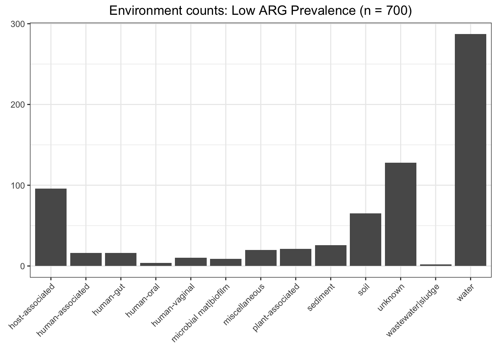
arg_cooccurrence.low <- read.table("data/raw/cooccurrences/arg_cooccurrence.low.tsv",
col.names = c("ARG_1", "ARG_2", "rho", "p"))
arg_cooccurrence.low <- arg_cooccurrence.low[, -4]
head(arg_cooccurrence.low)## ARG_1
## 1 gb.DQ212986.+.2258-2966.ARO:3002926.vanRG
## 2 gb.DQ212986.+.2258-2966.ARO:3002926.vanRG
## 3 gb.DQ212986.+.2258-2966.ARO:3002926.vanRG
## 4 gb.DQ212986.+.2258-2966.ARO:3002926.vanRG
## 5 gb.DQ212986.+.2258-2966.ARO:3002926.vanRG
## 6 gb.DQ212986.+.2258-2966.ARO:3002926.vanRG
## ARG_2 rho
## 1 gb.EU999036.+.688-1390.ARO:3002934.vanSD 0.296494
## 2 gb.KU302801.+.102199-102430.ARO:3002831.vgaC 0.451926
## 3 gb.L36601.+.1420-3130.ARO:3003036.oleB 0.146602
## 4 gb.NC_009632.+.49744-50476.ARO:3000347.ErmA 0.209047
## 5 gb.NC_000913.3.+.3219493-3220873.ARO:3000024.patA 0.239408
## 6 gb.AP009048.1.-.4303042-4304509.ARO:3003550.mdtP 0.413613low.pos_cooccurrence <- arg_cooccurrence.low[arg_cooccurrence.low[['rho']] > 0, ]
low.positive_graph <- graph.data.frame(low.pos_cooccurrence, directed = FALSE)
low.neg_cooccurrence <- arg_cooccurrence.low[arg_cooccurrence.low[['rho']] <= 0, ]
low.neg_cooccurrence[[3]] <- abs(low.neg_cooccurrence[[3]])
low.negative_graph <- graph.data.frame(low.neg_cooccurrence, directed = FALSE)low.mod_pos <- show_community_info(low.positive_graph)## [1] "Highest degree OTU was gb.NC_002516.+.2810008-2813197.ARO:3000804.MexF (degree = 187 ):"
## [1] "Highest degree OTU was gb.MF095097.1.-.1855-3484.ARO:3004470.poxtA (degree = 13 ):"
## [1] "Highest degree OTU was gb.U01945.+.373-916.ARO:3002897.SAT-4 (degree = 167 ):"
## [1] "Highest degree OTU was gb.NC_003112.2.+.330790-332317.ARO:3003962.farB (degree = 1 ):"
## [1] "Highest degree OTU was gb.KF663615.+.0-858.ARO:3001390.TEM-213 (degree = 4 ):"
## [1] "Highest degree OTU was gb.JF802084.+.2161-4264.ARO:3002975.vanTN (degree = 2 ):"
## [1] "Highest degree OTU was gb.AM399080.1.-.1664-2150.ARO:3002835.lnuA (degree = 1 ):"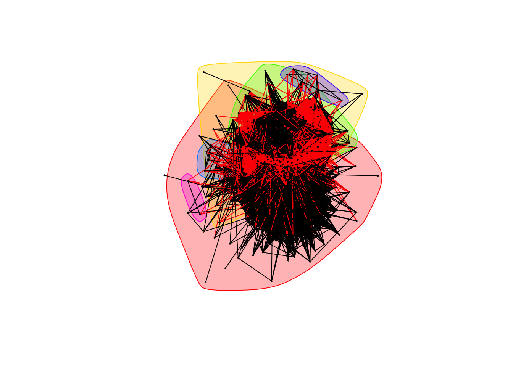
low.mod_neg <- show_community_info(low.negative_graph)## [1] "Highest degree OTU was gb.Z21523.+.0-1974.ARO:3000191.tetQ (degree = 4 ):"
## [1] "Highest degree OTU was gb.M18896.2.+.206-2126.ARO:3000190.tetO (degree = 4 ):"
## [1] "Highest degree OTU was gb.EU434751.+.658-2578.ARO:3000194.tetW (degree = 3 ):"
## [1] "Highest degree OTU was gb.U97042.+.1263-4347.ARO:3003010.ceoB (degree = 1 ):"
## [1] "Highest degree OTU was gb.NC_002516.2.-.2850882-2854014.ARO:3004074.MuxB (degree = 2 ):"
## [1] "Highest degree OTU was gb.KJ151292.+.294-2892.ARO:3000444.rphA (degree = 1 ):"
vertex_count <- vcount(low.positive_graph)
edge_count <- ecount(low.positive_graph)
low.bootstraps <- vector()
for (i in 1:1000)
{
g <- erdos.renyi.game(vertex_count, edge_count, type = "gnm")
E(g)$rho <- runif(length(E(g)), 0, 1)
g_communities <- cluster_fast_greedy(g, weights = E(g)$rho)
low.bootstraps <- c(low.bootstraps, modularity(g, membership(g_communities)))
}
low.bootstrap_cutoff <- quantile((sort(low.bootstraps)), 0.95)
ggplot(data.frame(val = low.bootstraps), aes(val)) + geom_histogram(binwidth = 0.0005) +
labs(x = "Modularity", y = "Counts", title = "Modularity scores of simulated networks (n = 1000)",
subtitle = "(Low ARG environments)") +
theme(plot.title = element_text(hjust = 0.5), plot.subtitle = element_text(hjust = 0.5)) +
geom_vline(xintercept = low.bootstrap_cutoff, colour = "#BB0000", linetype = "dashed")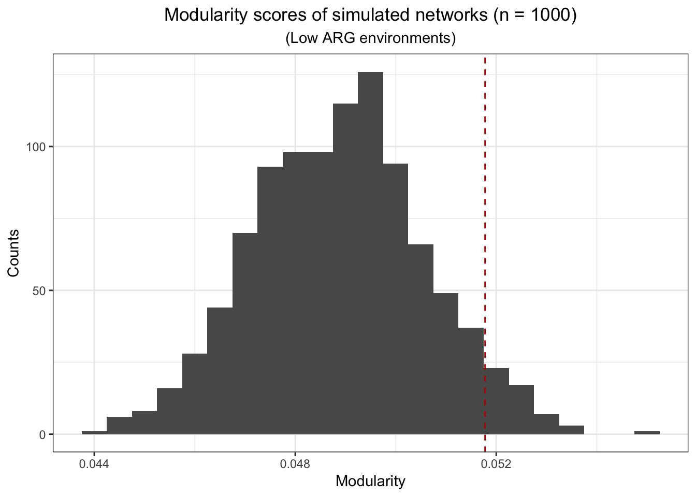
ggplot(data.frame(val = low.bootstraps), aes(val)) + geom_histogram(binwidth = 0.0005) +
labs(x = "Modularity", y = "Counts", title = "Modularity scores of simulated networks (n = 1000)",
subtitle = "(Low ARG environments)") +
theme(plot.title = element_text(hjust = 0.5), plot.subtitle = element_text(hjust = 0.5)) +
geom_vline(xintercept = low.bootstrap_cutoff, colour = "#BB0000", linetype = "dashed") +
geom_vline(xintercept = low.mod_pos, colour="#ed64f4", linetype="dashed") +
geom_vline(xintercept = low.mod_neg, colour = "#f4ad42", linetype = "dashed") 
Medium ARG percentage
med.arg_subset_info <- read.table("data/raw/arg_subsets/arg_datasets.subset.med.tsv", sep = "\t", header = TRUE)
ggplot(data.frame(med.arg_subset_info), aes(biome)) + geom_bar() +
labs(x = element_blank(), y = element_blank(), title = "Biome counts: Medium ARG Prevalence (n = 140)") +
theme(plot.title = element_text(hjust = 0.5), plot.subtitle = element_text(hjust = 0.5),
axis.text.x = element_text(angle = 90, hjust = 1))ggplot(data.frame(med.arg_subset_info), aes(environment_package)) + geom_bar() +
labs(x = element_blank(), y = element_blank(), title = "Environment counts: Medium ARG Prevalence (n = 140)") +
theme(plot.title = element_text(hjust = 0.5), plot.subtitle = element_text(hjust = 0.5),
axis.text.x = element_text(angle = 90, hjust = 1))arg_cooccurrence.med <- read.table("data/raw/cooccurrences/arg_cooccurrence.med.tsv",
col.names = c("ARG_1", "ARG_2", "rho", "p"))
arg_cooccurrence.med <- arg_cooccurrence.med[, -4]
head(arg_cooccurrence.med)## ARG_1
## 1 gb.DQ212986.+.2258-2966.ARO:3002926.vanRG
## 2 gb.DQ212986.+.2258-2966.ARO:3002926.vanRG
## 3 gb.DQ212986.+.2258-2966.ARO:3002926.vanRG
## 4 gb.DQ212986.+.2258-2966.ARO:3002926.vanRG
## 5 gb.DQ212986.+.2258-2966.ARO:3002926.vanRG
## 6 gb.DQ212986.+.2258-2966.ARO:3002926.vanRG
## ARG_2 rho
## 1 gb.NC_000913.3.+.3219493-3220873.ARO:3000024.patA 0.169252
## 2 gb.DQ212986.+.5137-5983.ARO:3002965.vanWG 0.616826
## 3 gb.JQ034306.+.0-861.ARO:3001376.TEM-196 0.277159
## 4 gb.U00096.+.2812615-2814154.ARO:3000074.emrB 0.180656
## 5 gb.KU254579.1.+.59421-59841.ARO:3004111.FosA6 0.267361
## 6 gb.AIIS01000002.1.-.233812-234307.ARO:3002875.dfrE 0.278025med.pos_cooccurrence <- arg_cooccurrence.med[arg_cooccurrence.med[['rho']] > 0, ]
med.positive_graph <- graph.data.frame(med.pos_cooccurrence, directed = FALSE)
med.neg_cooccurrence <- arg_cooccurrence.med[arg_cooccurrence.med[['rho']] <= 0, ]
med.neg_cooccurrence[[3]] <- abs(med.neg_cooccurrence[[3]])
med.negative_graph <- graph.data.frame(med.neg_cooccurrence, directed = FALSE)med.mod_pos <- show_community_info(med.positive_graph)## [1] "Highest degree OTU was gb.AB219524.1.+.1176-4338.ARO:3003699.mexQ (degree = 77 ):"
## [1] "Highest degree OTU was gb.U00096.+.2812615-2814154.ARO:3000074.emrB (degree = 87 ):"
## [1] "Highest degree OTU was gb.AF313472.+.15593-16397.ARO:3002639.APH(3'')-Ib (degree = 58 ):"
## [1] "Highest degree OTU was gb.AY082011.+.0-699.ARO:3002923.vanRD (degree = 2 ):"
med.mod_neg <- show_community_info(med.negative_graph)## [1] "Highest degree OTU was gb.KM998962.1.+.0-861.ARO:3003158.TEM-220 (degree = 12 ):"
## [1] "Highest degree OTU was gb.Z21523.+.0-1974.ARO:3000191.tetQ (degree = 33 ):"
## [1] "Highest degree OTU was gb.NG_050265.+.100-961.ARO:3000876.TEM-4 (degree = 12 ):"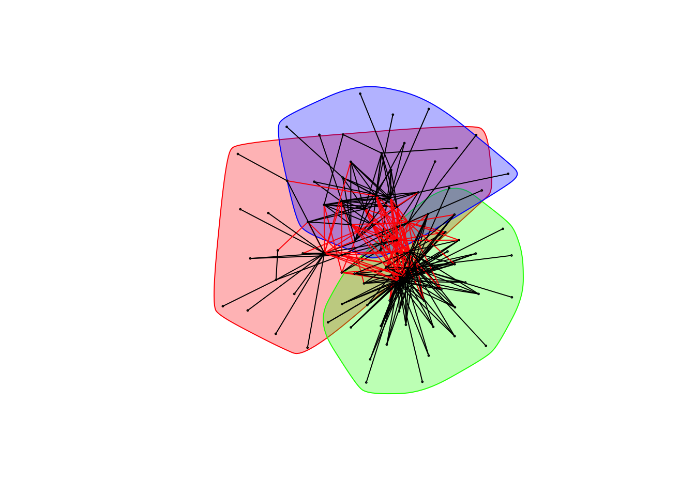
vertex_count <- vcount(med.positive_graph)
edge_count <- ecount(med.positive_graph)
med.bootstraps <- vector()
for (i in 1:1000)
{
g <- erdos.renyi.game(vertex_count, edge_count, type = "gnm")
E(g)$rho <- runif(length(E(g)), 0, 1)
g_communities <- cluster_fast_greedy(g, weights = E(g)$rho)
med.bootstraps <- c(med.bootstraps, modularity(g, membership(g_communities)))
}
med.bootstrap_cutoff <- quantile((sort(med.bootstraps)), 0.95)
ggplot(data.frame(val = med.bootstraps), aes(val)) + geom_histogram(binwidth = 0.0005) +
labs(x = "Modularity", y = "Counts", title = "Modularity scores of simulated networks (n = 1000)",
subtitle = "(Medium ARG environments)") +
theme(plot.title = element_text(hjust = 0.5), plot.subtitle = element_text(hjust = 0.5)) +
geom_vline(xintercept = med.bootstrap_cutoff, colour = "#BB0000", linetype = "dashed")
ggplot(data.frame(val = med.bootstraps), aes(val)) + geom_histogram(binwidth = 0.0005) +
labs(x = "Modularity", y = "Counts", title = "Modularity scores of simulated networks (n = 1000)",
subtitle = "(Medium ARG environments)") +
theme(plot.title = element_text(hjust = 0.5), plot.subtitle = element_text(hjust = 0.5)) +
geom_vline(xintercept = med.bootstrap_cutoff, colour = "#BB0000", linetype = "dashed") +
geom_vline(xintercept = med.mod_pos, colour="#ed64f4", linetype="dashed") +
geom_vline(xintercept = med.mod_neg, colour = "#f4ad42", linetype = "dashed") 
High ARG percentage
high.arg_subset_info <- read.table("data/raw/arg_subsets/arg_datasets.subset.high.tsv", sep = "\t", header = TRUE)
ggplot(data.frame(high.arg_subset_info), aes(biome)) + geom_bar() +
labs(x = element_blank(), y = element_blank(), title = "Biome counts: High ARG Prevalence (n = 94)") +
theme(plot.title = element_text(hjust = 0.5), plot.subtitle = element_text(hjust = 0.5),
axis.text.x = element_text(angle = 135, hjust = 1))
high.arg_subset_info[order(high.arg_subset_info$arg_percent, decreasing = TRUE), ]## id biome
## 11 4441137 mine drainage
## 26 4446122 human-associated habitat
## 9 4441095 hot spring
## 10 4441096 hot spring
## 17 4442583 hot spring
## 27 4446124 human-associated habitat
## 19 4443361 unknown
## 3 4440464 animal-associated habitat
## 2 4440463 animal-associated habitat
## 93 4464108 freshwater biome
## 32 4451259 cultured habitat
## 12 4441138 mine drainage ; microbial mat
## 90 4461371 feces
## 23 4443750 hot spring ; microbial mat
## 21 4443689 marine habitat
## 92 4464065 freshwater biome
## 89 4461367 feces
## 40 4460641 terrestrial biome
## 42 4460644 terrestrial biome
## 20 4443364 unknown
## 39 4460639 terrestrial biome
## 48 4461127 feces
## 41 4460642 terrestrial biome
## 87 4461347 feces
## 13 4441570 marine habitat
## 14 4441571 marine habitat
## 1 4440053 animal-associated habitat
## 55 4461150 feces
## 33 4451655 cultured habitat
## 6 4440949 animal-associated habitat
## 60 4461156 feces
## 45 4461121 feces
## 88 4461366 feces
## 25 4445734 human-associated habitat
## 28 4448226 marine habitat
## 72 4461202 feces
## 7 4440950 animal-associated habitat
## 94 4464109 freshwater biome
## 36 4454707 Temperate coniferous forest biome
## 37 4455198 Temperate coniferous forest biome
## 59 4461155 feces
## 22 4443746 hot spring ; microbial mat
## 57 4461152 feces
## 69 4461199 feces
## 70 4461200 feces
## 76 4461206 feces
## 35 4454692 estuarine biome
## 15 4441598 marine habitat
## 61 4461157 feces
## 29 4449707 sludge
## 58 4461153 feces
## 24 4444863 marine habitat
## 71 4461201 feces
## 62 4461158 feces
## 5 4440945 animal-associated habitat
## 83 4461214 feces
## 52 4461137 feces
## 56 4461151 feces
## 75 4461205 feces
## 49 4461132 feces
## 81 4461212 feces
## 73 4461203 feces
## 84 4461219 feces
## 46 4461122 feces
## 30 4450243 terrestrial biome
## 43 4461119 feces
## 16 4442475 animal-associated habitat
## 79 4461210 feces
## 51 4461136 feces
## 82 4461213 feces
## 53 4461139 feces
## 44 4461120 unknown
## 50 4461135 feces
## 74 4461204 feces
## 34 4453064 freshwater habitat
## 67 4461183 feces
## 54 4461140 feces
## 68 4461184 feces
## 80 4461211 feces
## 77 4461207 feces
## 64 4461163 feces
## 8 4441093 sludge
## 18 4443242 unknown
## 86 4461226 feces
## 66 4461166 feces
## 78 4461209 feces
## 38 4460151 animal-associated habitat
## 91 4461376 feces
## 65 4461164 feces
## 4 4440615 animal-associated habitat
## 85 4461220 feces
## 31 4451069 Cold-winter (continental) deserts and semideserts
## 63 4461161 feces
## 47 4461124 feces
## feature material
## 11 mine drainage mine drainage
## 26 human-associated habitat human-associated habitat
## 9 hot spring hot spring
## 10 hot spring hot spring
## 17 hot spring hot spring
## 27 human-associated habitat human-associated habitat
## 19 unknown unknown
## 3 animal-associated habitat animal-associated habitat
## 2 animal-associated habitat animal-associated habitat
## 93 Wastewater treatment plant Activated sludge
## 32 cultured habitat cultured habitat
## 12 mine drainage ; microbial mat mine drainage ; microbial mat
## 90 feces feces
## 23 hot spring ; microbial mat hot spring ; microbial mat
## 21 marine habitat marine habitat
## 92 Wastewater treatment plant Activated sludge
## 89 feces feces
## 40 mammalia-associated habitat feces
## 42 mammalia-associated habitat feces
## 20 unknown unknown
## 39 mammalia-associated habitat feces
## 48 feces feces
## 41 mammalia-associated habitat feces
## 87 feces feces
## 13 marine habitat marine habitat
## 14 marine habitat marine habitat
## 1 animal-associated habitat animal-associated habitat
## 55 feces feces
## 33 cultured habitat cultured habitat
## 6 animal-associated habitat animal-associated habitat
## 60 feces feces
## 45 feces feces
## 88 feces feces
## 25 human-associated habitat human-associated habitat
## 28 marine habitat marine habitat
## 72 feces feces
## 7 animal-associated habitat animal-associated habitat
## 94 Wastewater treatment plant Activated sludge
## 36 insecta-associated habitat dust
## 37 insecta-associated habitat dust
## 59 feces feces
## 22 hot spring ; microbial mat hot spring ; microbial mat
## 57 feces feces
## 69 feces feces
## 70 feces feces
## 76 feces feces
## 35 ocean coastal water
## 15 marine habitat marine habitat
## 61 feces feces
## 29 sludge sludge
## 58 feces feces
## 24 marine habitat marine habitat
## 71 feces feces
## 62 feces feces
## 5 animal-associated habitat animal-associated habitat
## 83 feces feces
## 52 feces feces
## 56 feces feces
## 75 feces feces
## 49 feces feces
## 81 feces feces
## 73 feces feces
## 84 feces feces
## 46 feces feces
## 30 coastal plain leafy wood soil
## 43 feces feces
## 16 animal-associated habitat animal-associated habitat
## 79 feces feces
## 51 feces feces
## 82 feces feces
## 53 feces feces
## 44 unknown unknown
## 50 feces feces
## 74 feces feces
## 34 freshwater habitat freshwater habitat
## 67 feces feces
## 54 feces feces
## 68 feces feces
## 80 feces feces
## 77 feces feces
## 64 feces feces
## 8 sludge sludge
## 18 unknown unknown
## 86 feces feces
## 66 feces feces
## 78 feces feces
## 38 animal-associated habitat animal-associated habitat
## 91 feces feces
## 65 feces feces
## 4 animal-associated habitat animal-associated habitat
## 85 feces feces
## 31 cold temperature habitat water
## 63 feces feces
## 47 feces feces
## environment_package location
## 11 unknown Richmond Mine, Iron Mountain, CA
## 26 human-associated California
## 9 water Yellowstone Natl Park
## 10 water Yellowstone Natl Park
## 17 water Yellowstone Natl Park
## 27 human-associated California
## 19 unknown unknown
## 3 host-associated Washington University, St. Louis, MI
## 2 host-associated Washington University, St. Louis, MI
## 93 wastewater|sludge Visp
## 32 unknown Ithaca, NY
## 12 built environment Richmond Mine, Iron Mountain, CA
## 90 host-associated St Louis Zoo
## 23 unknown Yellowstone Natl Park Hot Springs, Moran, WY
## 21 water Botany Bay near Bare Island, Sydney, Australia
## 92 wastewater|sludge Morges
## 89 host-associated St Louis Zoo
## 40 human-gut Chicago, IL
## 42 human-gut Chicago, IL
## 20 unknown unknown
## 39 human-gut Chicago, IL
## 48 plant-associated unknown
## 41 human-gut Chicago, IL
## 87 host-associated St Louis Zoo
## 13 water Sargasso Sea
## 14 water Sargasso Sea
## 1 unknown unknown
## 55 plant-associated unknown
## 33 unknown Berkeley, CA
## 6 human-gut unknown
## 60 plant-associated unknown
## 45 plant-associated unknown
## 88 host-associated St Louis Zoo
## 25 human-associated California
## 28 water Mariana Trough
## 72 plant-associated unknown
## 7 human-gut unknown
## 94 wastewater|sludge Visp
## 36 miscellaneous Valencia
## 37 miscellaneous Valencia
## 59 plant-associated unknown
## 22 unknown Yellowstone Natl Park Hot Springs, Moran, WY
## 57 plant-associated unknown
## 69 plant-associated unknown
## 70 plant-associated unknown
## 76 plant-associated unknown
## 35 water Rio de Janeiro
## 15 water Galapagos Islands - Mangrove on Isabella Island
## 61 plant-associated unknown
## 29 wastewater|sludge South India
## 58 plant-associated unknown
## 24 water Mariana Trough
## 71 plant-associated unknown
## 62 plant-associated unknown
## 5 human-gut unknown
## 83 plant-associated unknown
## 52 plant-associated unknown
## 56 plant-associated unknown
## 75 plant-associated unknown
## 49 plant-associated unknown
## 81 plant-associated unknown
## 73 plant-associated unknown
## 84 plant-associated unknown
## 46 plant-associated unknown
## 30 soil Cubatao
## 43 plant-associated unknown
## 16 host-associated Amherst, Massachusetts
## 79 plant-associated unknown
## 51 plant-associated unknown
## 82 plant-associated unknown
## 53 plant-associated unknown
## 44 unknown unknown
## 50 plant-associated unknown
## 74 plant-associated unknown
## 34 unknown South Australia
## 67 plant-associated unknown
## 54 plant-associated unknown
## 68 plant-associated unknown
## 80 plant-associated unknown
## 77 plant-associated unknown
## 64 plant-associated unknown
## 8 unknown Nine Springs Wastwater Treatment Plant, Madison, WI
## 18 unknown unknown
## 86 plant-associated unknown
## 66 plant-associated unknown
## 78 plant-associated unknown
## 38 host-associated Rio de Janeiro
## 91 host-associated St Louis Zoo
## 65 plant-associated unknown
## 4 human-gut St. Louis, MO
## 85 plant-associated unknown
## 31 miscellaneous Ny-Alesund
## 63 plant-associated unknown
## 47 plant-associated unknown
## seq_counts rel_seq_count arg_percent
## 11 180713 7630 0.042221644
## 26 79465 3042 0.038281004
## 9 8352 297 0.035560345
## 10 22272 659 0.029588721
## 17 22272 659 0.029588721
## 27 73639 2136 0.029006369
## 19 130520 3776 0.028930432
## 3 11857 190 0.016024289
## 2 10845 152 0.014015675
## 93 14592 183 0.012541118
## 32 1957059 21241 0.010853531
## 12 138453 1369 0.009887832
## 90 56380 487 0.008637815
## 23 1266 10 0.007898894
## 21 13512 103 0.007622854
## 92 71225 507 0.007118287
## 89 75012 492 0.006558951
## 40 22914780 146334 0.006386009
## 42 24921103 158298 0.006351966
## 20 212695 1335 0.006276593
## 39 20326472 121104 0.005957945
## 48 137296 801 0.005834110
## 41 19429521 107472 0.005531377
## 87 68884 375 0.005443935
## 13 644551 2961 0.004593896
## 14 644551 2961 0.004593896
## 1 810301 3607 0.004451432
## 55 132838 551 0.004147909
## 33 606488 2477 0.004084170
## 6 16164 62 0.003835684
## 60 76770 294 0.003829621
## 45 19681 70 0.003556730
## 88 14236 49 0.003441978
## 25 212356 718 0.003381115
## 28 202714 681 0.003359413
## 72 92151 298 0.003233823
## 7 20532 66 0.003214494
## 94 437239 1338 0.003060111
## 36 3297 10 0.003033060
## 37 14102 42 0.002978301
## 59 88301 261 0.002955799
## 22 2708 8 0.002954210
## 57 155162 455 0.002932419
## 69 224659 655 0.002915530
## 70 144110 413 0.002865866
## 76 176845 505 0.002855608
## 35 369 1 0.002710027
## 15 148018 373 0.002519964
## 61 145054 357 0.002461152
## 29 36270 87 0.002398677
## 58 111346 264 0.002370988
## 24 323700 740 0.002286067
## 71 57905 123 0.002124169
## 62 187224 395 0.002109772
## 5 9958 21 0.002108857
## 83 171733 362 0.002107923
## 52 148187 307 0.002071707
## 56 98369 202 0.002053492
## 75 199009 408 0.002050159
## 49 165244 337 0.002039408
## 81 166583 339 0.002035022
## 73 71435 145 0.002029817
## 84 220391 446 0.002023676
## 46 23342 47 0.002013538
## 30 533697 1064 0.001993641
## 43 72358 144 0.001990105
## 16 506 1 0.001976285
## 79 169453 333 0.001965147
## 51 176323 344 0.001950965
## 82 196750 382 0.001941550
## 53 259910 481 0.001850641
## 44 120014 222 0.001849784
## 50 136378 248 0.001818475
## 74 133407 240 0.001799006
## 34 64506 116 0.001798282
## 67 72215 129 0.001786332
## 54 213186 368 0.001726192
## 68 93148 159 0.001706961
## 80 145475 246 0.001691012
## 77 174966 289 0.001651749
## 64 254363 420 0.001651184
## 8 127953 209 0.001633412
## 18 3711 6 0.001616815
## 86 333219 537 0.001611553
## 66 258046 415 0.001608240
## 78 142916 224 0.001567354
## 38 525841 803 0.001527078
## 91 38999 59 0.001512859
## 65 184366 278 0.001507870
## 4 622554 936 0.001503484
## 85 222856 335 0.001503213
## 31 25523 37 0.001449673
## 63 379277 547 0.001442218
## 47 94521 135 0.001428254ggplot(data.frame(high.arg_subset_info), aes(environment_package)) + geom_bar() +
labs(x = element_blank(), y = element_blank(), title = "Biome counts: High ARG Prevalence (n = 94)") +
theme(plot.title = element_text(hjust = 0.5), plot.subtitle = element_text(hjust = 0.5),
axis.text.x = element_text(angle = 135, hjust = 1))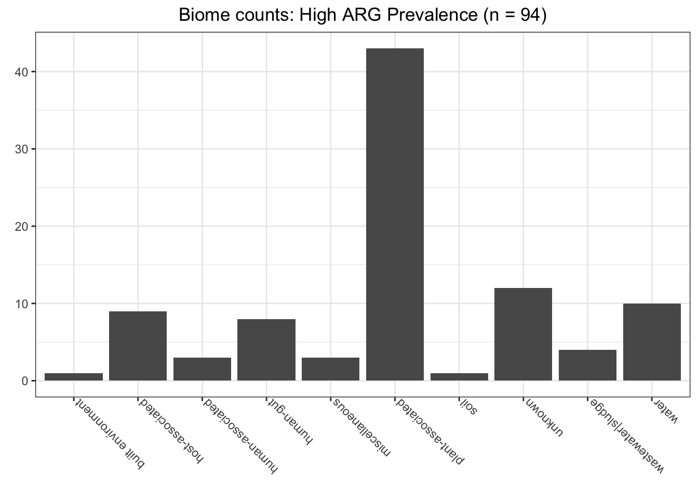
arg_cooccurrence.high <- read.table("data/raw/cooccurrences/arg_cooccurrence.high.tsv",
col.names = c("ARG_1", "ARG_2", "rho", "p"))
arg_cooccurrence.high <- arg_cooccurrence.high[, -4]
head(arg_cooccurrence.high)## ARG_1
## 1 gb.NC_002516.+.472023-473175.ARO:3000377.MexA
## 2 gb.NC_002516.+.472023-473175.ARO:3000377.MexA
## 3 gb.NC_002516.+.472023-473175.ARO:3000377.MexA
## 4 gb.NC_002516.+.472023-473175.ARO:3000377.MexA
## 5 gb.NC_002516.+.472023-473175.ARO:3000377.MexA
## 6 gb.NC_002516.+.472023-473175.ARO:3000377.MexA
## ARG_2 rho
## 1 gb.U60294.+.0-765.ARO:3003099.cphA2 1.000000
## 2 gb.NC_002516.2.-.1472546-1473980.ARO:3004077.PmpM 0.802880
## 3 gb.X93314.+.0-927.ARO:3002364.PER-2 1.000000
## 4 gb.Y14574.+.0-861.ARO:3000888.TEM-17 0.551155
## 5 gb.X97254.+.153-1011.ARO:3001043.TEM-178 0.471500
## 6 gb.L20800.+.2308-4267.ARO:3000195.tetB(P) 0.691311high.pos_cooccurrence <- arg_cooccurrence.high[arg_cooccurrence.high[['rho']] > 0, ]
high.positive_graph <- graph.data.frame(high.pos_cooccurrence, directed = FALSE)
high.neg_cooccurrence <- arg_cooccurrence.high[arg_cooccurrence.high[['rho']] <= 0, ]
high.neg_cooccurrence[[3]] <- abs(high.neg_cooccurrence[[3]])
high.negative_graph <- graph.data.frame(high.neg_cooccurrence, directed = FALSE)high.mod_pos <- show_community_info(high.positive_graph)## [1] "Highest degree OTU was gb.AB091338.+.173-1355.ARO:3003551.emeA (degree = 107 ):"
## [1] "Highest degree OTU was gb.DQ677333.+.0-780.ARO:3002621.aadA24 (degree = 77 ):"
## [1] "Highest degree OTU was gb.DQ105529.+.0-861.ARO:3001013.TEM-146 (degree = 71 ):"
## [1] "Highest degree OTU was gb.NC_002516.+.4707534-4710624.ARO:3000808.mexI (degree = 106 ):"
The mexF gene is highly important, which corresponds with findings that it enhances fitness.
high.mod_neg <- show_community_info(high.negative_graph)## [1] "Highest degree OTU was gb.GQ149347.+.5269-6130.ARO:3001037.TEM-171 (degree = 20 ):"
## [1] "Highest degree OTU was gb.NC_002156.+.1429-2290.ARO:3000979.TEM-116 (degree = 24 ):"
## [1] "Highest degree OTU was gb.NC_014638.1.-.1610636-1613960.ARO:3003730.Bifidobacteria (degree = 20 ):"
## [1] "Highest degree OTU was gb.EU434751.+.658-2578.ARO:3000194.tetW (degree = 16 ):"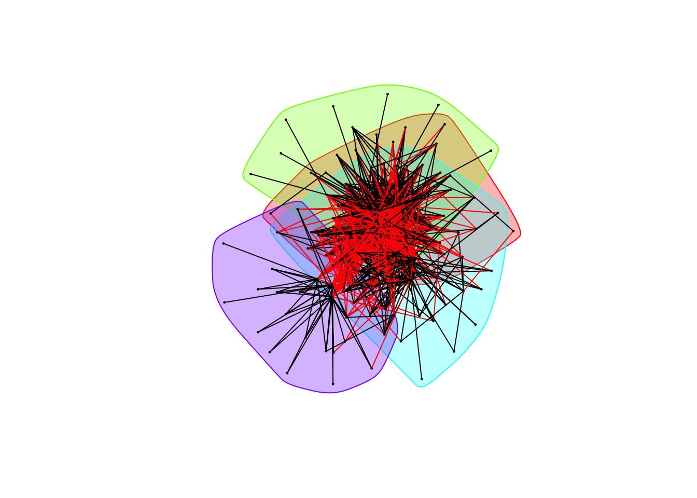
vertex_count <- vcount(high.positive_graph)
edge_count <- ecount(high.positive_graph)
high.bootstraps <- vector()
for (i in 1:1000)
{
g <- erdos.renyi.game(vertex_count, edge_count, type = "gnm")
E(g)$rho <- runif(length(E(g)), 0, 1)
g_communities <- cluster_fast_greedy(g, weights = E(g)$rho)
high.bootstraps <- c(high.bootstraps, modularity(g, membership(g_communities)))
}
high.bootstrap_cutoff <- quantile((sort(high.bootstraps)), 0.95)
ggplot(data.frame(val = high.bootstraps), aes(val)) + geom_histogram(binwidth = 0.0005) +
labs(x = "Modularity", y = "Counts", title = "Modularity scores of simulated networks (n = 1000)",
subtitle = "(High ARG environments)") +
theme(plot.title = element_text(hjust = 0.5), plot.subtitle = element_text(hjust = 0.5)) +
geom_vline(xintercept = high.bootstrap_cutoff, colour = "#BB0000", linetype = "dashed")
ggplot(data.frame(val = high.bootstraps), aes(val)) + geom_histogram(binwidth = 0.0005) +
labs(x = "Modularity", y = "Counts", title = "Modularity scores of simulated networks (n = 1000)",
subtitle = "(High ARG environments)") +
theme(plot.title = element_text(hjust = 0.5), plot.subtitle = element_text(hjust = 0.5)) +
geom_vline(xintercept = high.bootstrap_cutoff, colour = "#BB0000", linetype = "dashed") +
geom_vline(xintercept = high.mod_pos, colour="#ed64f4", linetype="dashed") +
geom_vline(xintercept = high.mod_neg, colour = "#f4ad42", linetype = "dashed") 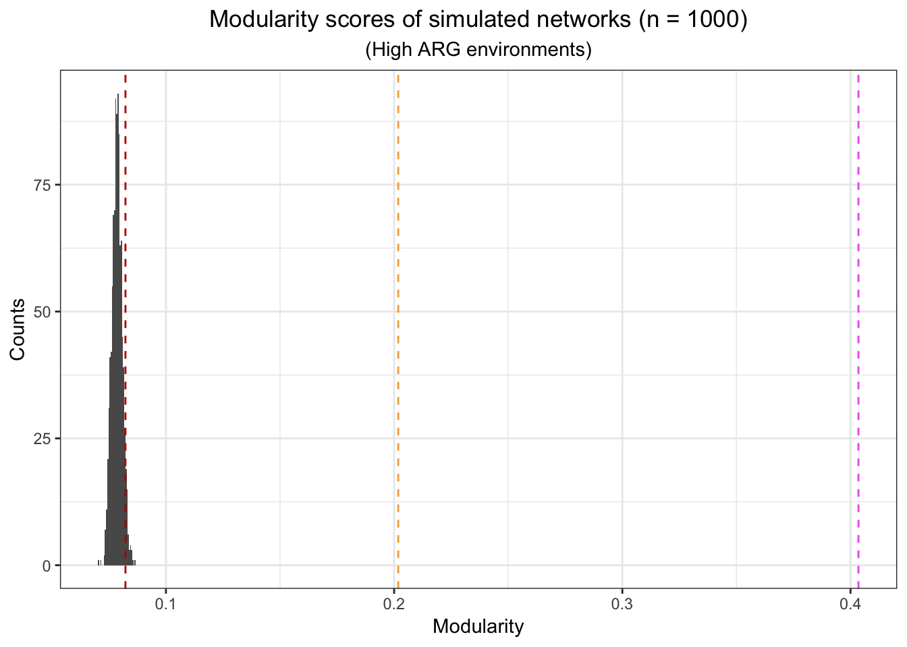
Paul Villanueva
Ph.D. Student, Bioinformatics and Computational Biology
Iowa State University. Ames, IA.